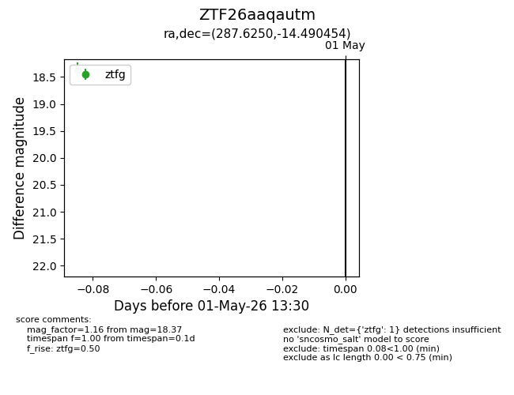
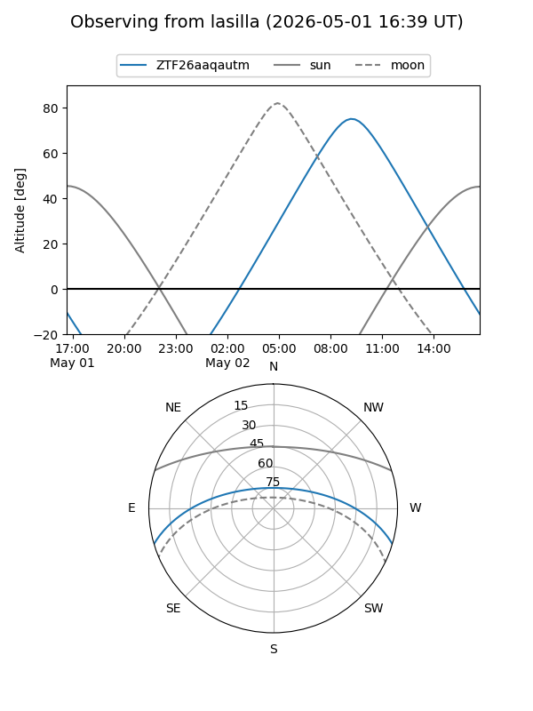
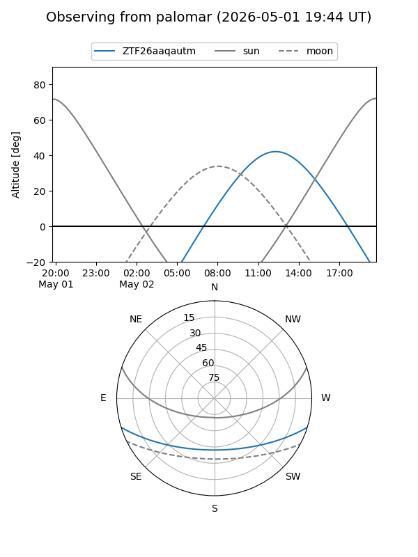

ZTF26aaqautm
Target ZTF26aaqautm at 2026-05-01 13:39
Aliases and brokers:
FINK: link
Lasair: link
ALeRCE: link
alt names
ZTF26aaqautm (ztf,fink_ztf)
Coordinates:
equatorial (ra, dec) = 287.6250,-14.49045
equatorial (HMS+DMS) = 19:10:29.99,-14:29:25.63
galactic (l, b) = (22.0196,-10.70088)
Flags:
Photometry:
last ztfg=18.37
1 ztfg detections
Lightcurve

Visibility


Additional plots